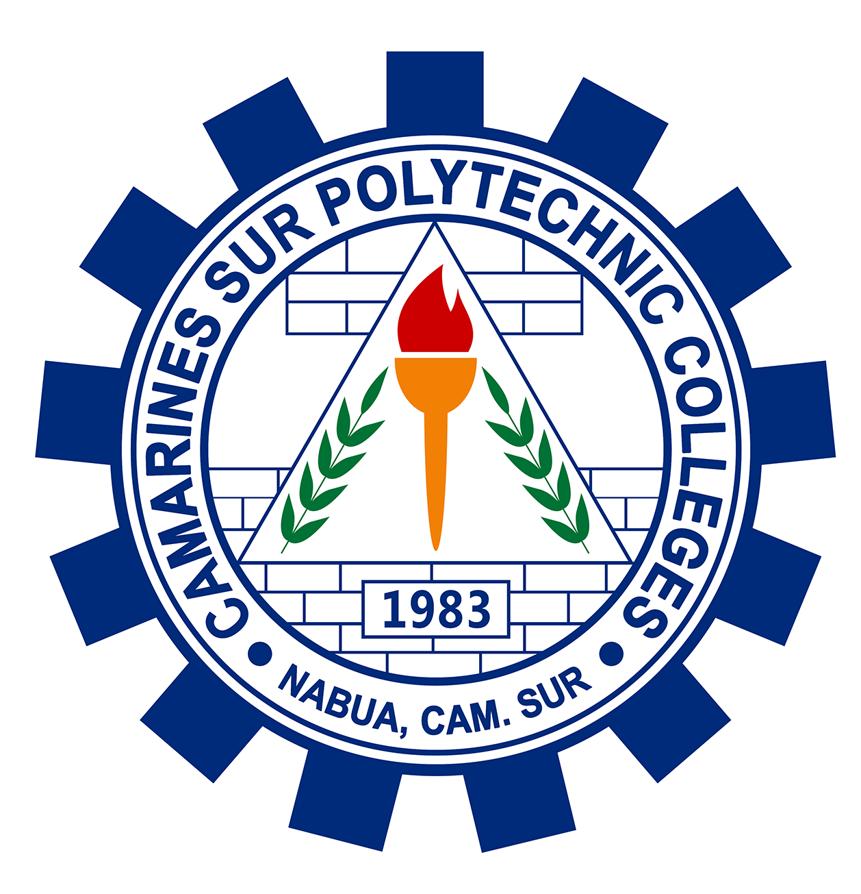
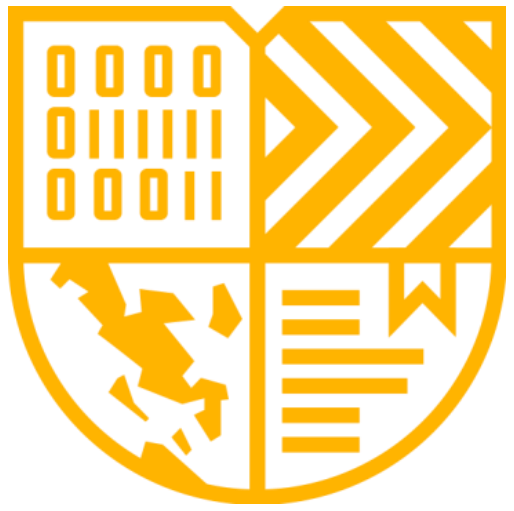

Hi, It's Alex
I'm a
Meet Lemuel Luares: A Passionate BSIS Student Lemuel Luares is a dedicated student pursuing a Bachelor of Science in Information Systems (BSIS) at CSPC. Growing up in Nabua, Bicol, Lemuel has always been fascinated by technology and how it can be used to solve real-world problems. His interest in computers and software development led him to choose BSIS as his path.
Hire me